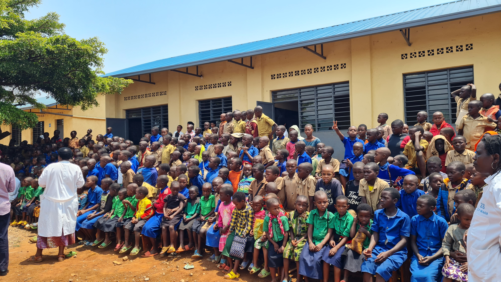

Notre histoire
Une fraternité qui relie la France et le Rwanda.
Main dans la main pour Magi est né d’une conviction simple : l’éducation ouvre des chemins d’avenir, et la solidarité prend tout son sens lorsqu’elle devient une véritable fraternité.
Au cœur de Magi
À Magi, près de Butare, l’école est un lieu d’apprentissage, de rencontre et d’espérance. Le projet Main dans la main pour Magi souhaite créer et entretenir un lien durable entre celles et ceux qui soutiennent le projet en France et la communauté scolaire au Rwanda.
Notre ambition est d’accompagner l’école dans ses besoins concrets, tout en respectant les personnes, les réalités locales et les projets portés sur place.
Une dimension chrétienne
Notre démarche s’inscrit dans une vision chrétienne de l’éducation : chaque enfant est accueilli comme une personne unique, appelée à grandir en dignité, en liberté et dans le respect des autres. La fraternité, le service et l’espérance sont au cœur de notre engagement.

Notre esprit
Donner, mais surtout construire des liens.
Nous voulons privilégier une relation de confiance et de proximité, faite de nouvelles régulières, de projets partagés et d’une attention particulière aux besoins des enfants.
Échanger avec nous →